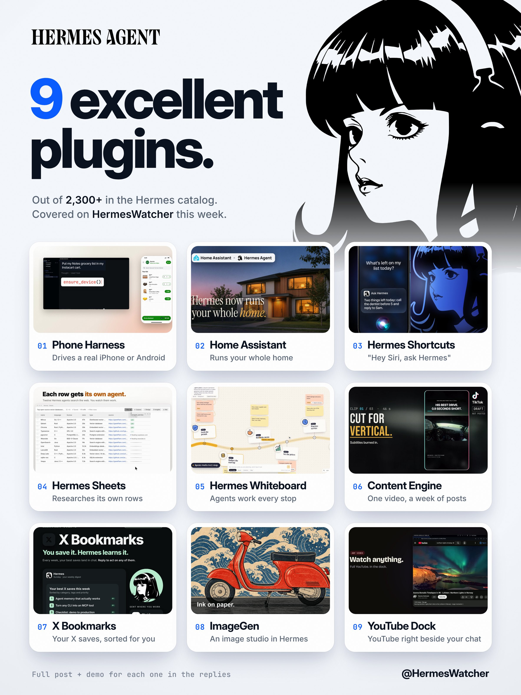

HermesWatcher 精選九個 Agent 延伸應用：用途與安裝前查核
貼文重點
2026-11-15，非官方 Hermes Release Watch 選出九項 Hermes 延伸應用，鼓勵挑一項週末嘗試。以下功能為貼文及原圖的描述，並非本次獨立實測：
- Phone Harness：操作 iPhone 或 Android。
- Home Assistant：連接智慧家庭。
- Hermes Shortcuts：透過 Siri 呼叫 Hermes。
- Hermes Sheets：讓 Agent 研究試算表內容。
- Hermes Whiteboard：沿白板上的計畫逐步工作。
- Content Engine：把一支影片轉成多則貼文。
- X Bookmarks：整理 X 書籤。
- ImageGen：圖像生成工作室。
- YouTube Dock：在聊天旁顯示 YouTube。
原文說每項的完整貼文與示範在回覆串，但本次無法讀取 X 回覆，因而未取得九項各自的原始專案、安裝網址或演示，也不能確認它們是否均可用、是否官方維護或相容目前版本。HermesWatcher 首頁自稱獨立指南，並顯示 2,303 個 plugins；這是該站當時的目錄數字，不代表官方審核或安全保證。官方文件將 skills 說明為按需載入的知識文件；不要把 skill、plugin、外部服務或示範介面直接視為同一種安裝物件。
實用判斷
優先考慮試算表研究與白板拆解，對資料整理及計畫管理有啟發；X 書籤可作為知識庫資料來源，但必須先確認官方 API 存取、費用與授權。手機、智慧家庭和 Siri 涉及裝置權限，先在測試帳戶與低風險情境使用；內容再製要查素材著作權。任何第三方擴充都應先確認原始作者、程式碼、維護狀態、相容版本、依賴和資料流，審閱權限後再安裝，不要直接給予完整帳號或裝置存取。本次未安裝或執行任何項目。

原圖取自公開 X 貼文，保留作者標示；畫面為插畫與產品示意，未見可辨識真人或敏感個資。重用授權未確認，版權屬原權利人。
來源與限制
- 原始貼文：https://x.com/HermesWatcher/status/2121800406322078018
- 作者的非官方網站：https://hermeswatcher.com/
- Hermes 官方 Skills 文件：https://hermes-agent.nousresearch.com/docs/user-guide/features/skills
- 擷取自公開貼文的第三方鏡像資料，本地保存來源 JSON；回覆串與各專案原始碼未能核實。